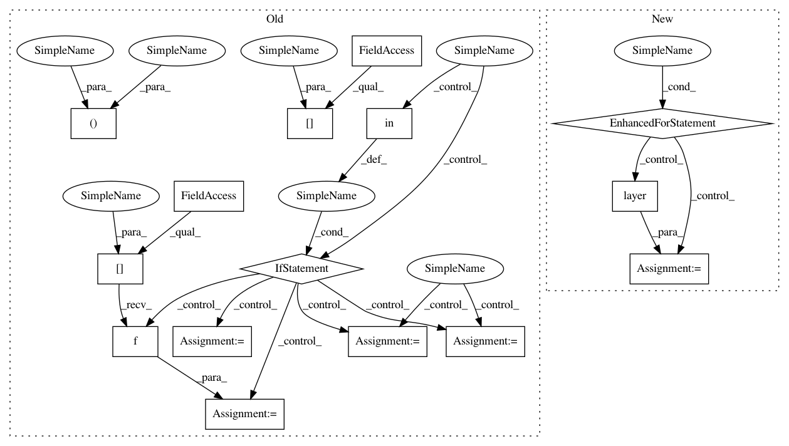

a968bc8ae127d1e3833c2fa468858f9c48f6923c,batchflow/models/torch/encoder_decoder.py,DecoderModule,forward,#DecoderModule#Any#,96
Before Change
self._make_modules(inputs, **kwargs)
def forward(self, x):
b_counter, u_counter, c_counter = 0, 0, 0
inputs = x if isinstance(x, list) else [x]
x = inputs[-1]
for i in range(self.num_stages):
for letter in self.decoder_layout:
if letter in ["b"]:
x = self.decoder_b[b_counter](x)
b_counter += 1
elif letter in ["u"]:
x = self.decoder_u[u_counter](x)
u_counter += 1
elif letter in ["c"]:
if self.skip and (i < len(inputs) - 2):
x = self.decoder_c[c_counter]([x, inputs[-i - 3]])
c_counter += 1
return x
def _make_modules(self, inputs, **kwargs):
After Change
x = inputs[-1]
i = 0
for letter, layer in zip(self.layout, self.values()):
if letter in ["b", "u"]:
x = layer(x)
elif letter in ["c"] and self.skip and (i < len(inputs) - 2):
x = layer([x, inputs[-i - 3]])
i += 1
return x
def _make_modules(self, inputs, **kwargs):
In pattern: SUPERPATTERN
Frequency: 3
Non-data size: 15
Instances
Project Name: analysiscenter/batchflow
Commit Name: a968bc8ae127d1e3833c2fa468858f9c48f6923c
Time: 2020-02-10
Author: Tsimfer.SA@gazprom-neft.ru
File Name: batchflow/models/torch/encoder_decoder.py
Class Name: DecoderModule
Method Name: forward
Project Name: analysiscenter/batchflow
Commit Name: a968bc8ae127d1e3833c2fa468858f9c48f6923c
Time: 2020-02-10
Author: Tsimfer.SA@gazprom-neft.ru
File Name: batchflow/models/torch/encoder_decoder.py
Class Name: DecoderModule
Method Name: forward
Project Name: analysiscenter/batchflow
Commit Name: 7958b7a684f8819c95106a768e44cd37df226310
Time: 2019-11-26
Author: Tsimfer.SA@gazprom-neft.ru
File Name: batchflow/models/eager_torch/layers/conv_block.py
Class Name: ConvBlock
Method Name: forward
Project Name: analysiscenter/batchflow
Commit Name: a968bc8ae127d1e3833c2fa468858f9c48f6923c
Time: 2020-02-10
Author: Tsimfer.SA@gazprom-neft.ru
File Name: batchflow/models/torch/encoder_decoder.py
Class Name: EncoderModule
Method Name: forward